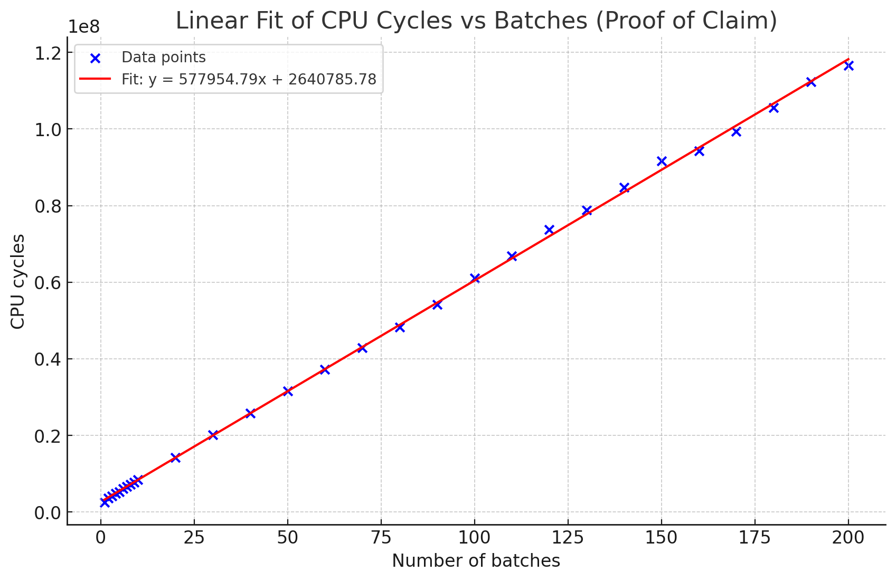
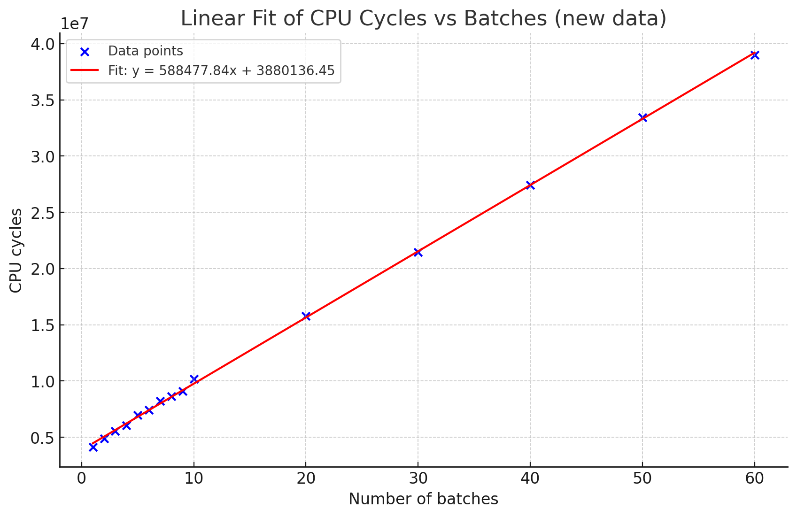

ANALYSIS-GAS-COST-DETERMINATION
| Field | Value |
|---|---|
| Name | [Analysis] Gas Cost Determination |
| Slug | 191 |
| Status | raw |
| Category | Informational |
| Editor | Thomas Lavaur thomaslavaur@logos.co |
| Contributors | Filip Dimitrijevic filip@logos.co |
Timeline
- 2026-08-31 —
3cac48f— docs(blockchain): rename locked notes to service notes (#423) - 2026-07-27 —
628684e— docs(blockchain): fix CHANNEL_DEPOSIT execution, block limits and storage market formatting (#381) - 2026-07-20 —
5b20a2d— docs(blockchain) Channel Participation in PoS (#364) - 2026-07-03 —
709cf7f— Bedrock-RFC: Remove Concept of a Session (#365) - 2026-05-28 —
d45eed2— Chore: mirror blochain specs into github/mdbook (#347)
Revisions History
| Version | Changes | Date |
|---|---|---|
| 1.0.0 | Initial revision. | N/A |
| 1.2.0 | Removed DA, included Execution Gas determination for channel deposits and withdraws. Updated the Execution Gas of the Channel config. | N/A |
| 1.3.0 | [RFC] Make Ledger Transaction an Operation. Updated project references to Logos Blockchain | N/A |
| 1.4.0 | [RFC] Enforce NoteId uniqueness | N/A |
| 1.4.1 | [RFC] Simplify Mantle Transaction and Refactor Ledger Operations | N/A |
| 1.5.0 | Introduce the new Operation CHANNEL_STAKE_ASSIGNATION and update of the channel operations to reflect changes in Mantle | 2026-06-24 |
| 1.5.1 | Reflect Channel Deposit execution modification. It now consumes inputs to update their NoteId | 2026-07-27 |
| 1.5.2 | Renamed locked notes into service notes and stated that the Input Gas covers the check that a note is neither a service nor a channel note | 2026-08-27 |
Introduction
In Mantle, each Mantle Transaction contains one or more Operations. These components consume gas, measured through fixed gas units that reflect their execution or storage impact. Logos Blockchain introduces two independent gas markets:
- Execution Gas: measuring computational workload.
- Permanent Storage Gas: measuring cost of fully replicated storage.
Gas constants are carefully calibrated to reflect the computational and storage requirements of different operations on Logos Blockchain. By standardizing gas measurements, the system can accurately charge fees proportional to resource usage, preventing network abuse and incentivizing efficient transaction design.
Overview
We conducted a comprehensive analysis of execution requirements for each Operation type in Mantle Transactions. This detailed examination allowed us to determine precise gas amounts for each Operation based on the actual computational resources consumed.
The gas constants we established are strategically divided between permanent storage and execution components, directly proportional to their respective resource utilization within Mantle Transactions. This separation ensures that gas costs accurately reflect the true computational burden of different operations. Moreover, gas can also be adjusted arbitrarily to incentivize or disincentivize the usage of certain Operations compared to others.
Our methodology involved measuring execution complexity and defining how gas is determined for each Gas Market. This is critical for proper network operation as it directly impacts transaction prioritization and network economics.
Permanent Storage Gas
Permanent Storage is paid directly for the entire signed Mantle Transaction. The Permanent Storage Gas price is derived from Storage Markets and is used to determine the Permanent Storage fee. 1 Permanent Storage Gas corresponds to 1 byte.
permanent_storage_fee = len(encode(tx_signed)) * permanent_storage_gas_price
Execution Gas
Execution is a second general market that represents how costly an Operation is to execute. This cost can be fixed or variable based on the content of the Operation. The Execution Gas base price is derived from Execution Market and each Operation defines its execution gas amount. 1 Execution Gas corresponds to 1,000 CPU cycles.
execution_base_fee = tx.ops.get_summed_gas() * execution_gas_base_price
The gas derivation of each Operation are:
TRANSFER_GAS = 590
CHANNEL_INSCRIBE_GAS = 56
CHANNEL_CONFIG_GAS = 56 * configuration_threshold
CHANNEL_DEPOSIT_GAS = 590
CHANNEL_TRANSFER_GAS = 56 * stake_manipulation_threshold
CHANNEL_WITHDRAW_GAS = 56 * stake_manipulation_threshold
SDP_DECLARE_GAS = 646
SDP_WITHDRAW_GAS = 590
SDP_ACTIVE_GAS = 590
LEADER_CLAIM_GAS = 580
and come from our implementation observations as described in Gas determination from measures. To get these numbers, we based our calculations on the following measures:
| Operation | Number of CPU cycles |
|---|---|
| ZkSignature batch verification | 3,900,000 + number_of_proof x 590,000 |
| Proof of Claim batch verification | 2,640,000 + number_of_proof x 580,000 |
| Eddsa25519 signature verification | 56,000 |
Comparison, list searching, hashes and operation in small fields are neglected. We also supposed that the initialization cost for batch verification is paid by everyone and deduced from the block directly. The user then pay only for the part that is proportional to the number of proofs.
Transfer
The Execution Gas of the Transfer Operation compensates for the verification of the ZkSignature proof.
Execution: ~590k CPU cycles.
- Verification of the ZK signature: 590,000 cycles.
Input Gas
Input gas covers the computational cost of verifying that one Note Id exists in the Ledger and is not a service or channel note. Additionally, it compensates for the removal of one Note Id from the Ledger.
Execution: negligible.
- Verification that the note is in the ledger: negligible.
- Verification that the note is not a channel or service note: negligible.
- Removing of the note from the ledger: negligible.
Output Gas
Output gas accounts for the computational resources required to verify that one output is well-formed and for its inclusion in the Ledger.
Execution: negligible.
- Verification of the output validity: negligible.
- Insertion of the note in the ledger: negligible.
- Derivation of the note identifiers: negligible
Channel Inscription
The validation process includes verifying an Eddsa25519 signature, confirming that the signer is authorized for the specified channel, and checking the chaining sequence of the channel. The execution encompasses creating channel records (if not previously used) and updating the tip of the channel.
Execution: ~56k CPU cycles.
- Verification of the Ed25519 signature: 56,000 cycles.
- Verification of the signer authorization: negligible.
- Verification of channel sequencing: negligible
- Update the channel state: negligible
Channel Deposit
The Execution Gas of the Channel Deposit Operation compensates for the verification of the ZkSignature proof and for the check of the inputs.
Execution: ~590k CPU cycles.
- Verification of the ZK signature: 590,000 cycles.
- Verification that the notes are in the ledger: negligible.
- Verification that the notes are unlocked: negligible.
- Removing of the note from the ledger: negligible.
- Insertion of the note in the ledger: negligible.
- Derivation of the note identifiers: negligible
Channel Withdraw
The validation process requires verifying multiple Eddsa25519 signatures. The execution require consuming the channel notes, deriving note Id and adding notes to the ledger.
Execution: ~56k CPU cycles * transfer_threshold.
- Verification of
transfer_thresholdEd25519Signatures: 56,000 cycles per signature. - Verification that the notes are in the ledger: negligible.
- Verification that the notes are in the channel: negligible.
- Removing the notes from channel notes: negligible.
Channel Stake Assignation
The validation process requires verifying multiple Eddsa25519 signatures, and managing the channel notes. The execution require deriving note Id and adding notes to the ledger.
Execution: ~56k CPU cycles * transfer_threshold.
- Verification of
transfer_thresholdEd25519Signatures: 56,000 cycles per signature. - Verification that the notes are in the ledger: negligible.
- Verification that the notes are in the channel: negligible.
- Removing of the note from the ledger: negligible.
- Verification of the output validity: negligible.
- Insertion of the note in the ledger: negligible.
- Derivation of the note identifiers: negligible
Channel Config
This gas amount covers the verification of multiple Eddsa25519 signatures and ensures the operation is well-formed. This represents the computational cost associated with processing channel configuration operations.
- Execution: ~56k CPU cycles * configuration_threshold.
- Verification of the configuration_threshold Ed25519 signatures: 56,000 cycles per signature.
- Modification of the state of the channel: negligible.
SDP Declaration
This gas covers multiple verification processes: confirming ownership of the service note through ZkSignature verification, validating the zk_id via a second ZkSignature, and establishing ownership of the provider_id through an Eddsa25519 signature. It also includes verification of the declaration format, confirmation of note existence, validation that the note is not already used for this service, and verification of its amount. Additionally, it accounts for the computational costs associated with the note service locking mechanism and declaration management.
Execution: ~ 646k CPU cycles.
- Verification of the Ed25519 signature: 56,000 cycles.
- Verification of the ZK signature: 590,000 cycles.
- Verification that the declaration doesn’t already exist: negligible.
- Verification of locator length: negligible.
- Verification of service note existence: negligible.
- Verification of service note value: negligible.
- Verification that the note isn’t already used for the service: negligible.
- Register the note as a service note: negligible.
SDP Withdraw
This gas covers a verification process that includes: confirming ownership of the zk_id through ZkSignature verification, validating the existence of the service note, verifying that the note has exceeded its lock period, and confirming that the declaration exists and has not been previously withdrawn. The validation process also ensures that the withdrawal message's nonce is greater than any previous nonce, preventing replay attacks. During execution, the system updates the declaration's status to withdrawn, removes the declaration from the service note's associated declarations, and—if the note has no remaining declarations—removes it from the service notes dictionary.
Execution: ~ 590k CPU cycles.
- Verification that the service note exists and is bound to the declaration: negligible.
- Verification that the note can be unlocked: negligible.
- Verification that the declaration exist: negligible.
- Verification of the ZK signature: 590,000 cycles.
- Verification that the declaration wasn’t already withdrawn: negligible.
- Verification of nonce incrementation: negligible.
- Update declaration: negligible.
- Remove declaration from service note: negligible.
- Unlock the note if not linked to any declaration: negligible.
SDP Activation
This gas funds the verification of the zk_id signature through the ZkSignature verification process, validates the existence of the declaration in the system, and ensures that the activation message's nonce is greater than any previous nonce to prevent replay attacks. The validation includes confirming that the declaration ID is present in the declarations dictionary and that the signature corresponds to the declaration's registered zk_id public key.
- Execution: ~590k CPU cycles.
- Verification that the declaration exist: negligible.
- Verification of nonce incrementation: negligible.
- Verification of the ZK signature: 590,000 cycles.
- Evaluation of the activity depends on the service and is neglected here
Leader Claims
This gas covers the verification of reward voucher ownership through a Proof of Claim, confirmation that the voucher nullifier is not already present in the nullifier set, and validation that the rewards root exists in the list of recent voucher Merkle tree roots. The execution process involves adding the voucher nullifier to the nullifier set and increasing the Mantle Transaction balance by the designated leader reward amount.
Execution: ~580k CPU cycles.
- Verification that the voucher nullifier isn’t already in the set: negligible.
- Verification that the rewards root is one of the root of the reward tree of the last blocks: negligible.
- Verification of the proof of claim: 580,000 cycles.
- Insertion of the nullifier in the voucher nullifier set: negligible.
- Insertion of the note in the ledger: negligible.
- Derivation of the note identifiers: negligible
Annex
Gas determination from measures
The material used for the benchmarks is the following:
- CPU : 13th Gen Intel(R) Core(TM) i9-13980HX (24 cores / 32 threads)
- RAM : 32GB - Speed: 5600 MT/s
- Motherboard: Micro-Star International Co., Ltd. MS-17S1
- OS : Ubuntu 22.04.5 LTS
- Kernel : 6.8.0-59-generic
Eddsa Signature Verification
To get the numbers, we executed the test included in the official Rust implementation of the node.
Over 100 iterations, verifying an Eddsa25519 signature requires an average of 56,000 CPU cycles.
Proof of Claim
To get the numbers, we executed the test included in the official Rust implementation of the node.
We found the best linear curve approximating these measures (over 100 iterations):
| Number of Batches | Number of CPU cycles |
|---|---|
| 1 | 2,502,356 |
| 2 | 3,662,746 |
| 3 | 4,216,022 |
| 4 | 4,800,445 |
| 5 | 5,324,304 |
| 6 | 6,091,442 |
| 7 | 6,618,446 |
| 8 | 7,165,629 |
| 9 | 7,692,432 |
| 10 | 8,421,783 |
| 20 | 14,257,450 |
| 30 | 20,131,137 |
| 40 | 25,782,519 |
| 50 | 31,595,523 |
| 60 | 37,286,419 |
| Number of Batches | Number of CPU cycles |
|---|---|
| 70 | 42,901,298 |
| 80 | 48,309,912 |
| 90 | 54,191,072 |
| 100 | 61,082,050 |
| 110 | 66,927,817 |
| 120 | 73,758,494 |
| 130 | 78,816,789 |
| 140 | 84,801,250 |
| 150 | 91,693,824 |
| 160 | 94,248,613 |
| 170 | 99,430,138 |
| 180 | 105,607,812 |
| 190 | 112,379,089 |
| 200 | 116,599,001 |
We got the curve that we decided to approximate to :


ZkSignature
To get the numbers, we executed the test included in the official Rust implementation of the node.
We found the best linear curve approximating these measures (over 1000 iterations):
| Number of Batches | Number of CPU cycles |
|---|---|
| 1 | 4,126,177 |
| 2 | 4,904,084 |
| 3 | 5,538,085 |
| 4 | 6,061,800 |
| 5 | 6,957,754 |
| 6 | 7,421,851 |
| 7 | 8,237,485 |
| 8 | 8,621,986 |
| 9 | 9,115,091 |
| 10 | 10,186,171 |
| 20 | 15,777,800 |
| 30 | 21,456,771 |
| 40 | 27,441,722 |
| 50 | 33,430,729 |
| 60 | 38,986,389 |
| Number of Batches | Number of CPU cycles |
|---|---|
| 70 | 44,708,450 |
| 80 | 50,894,373 |
| 90 | 56,534,430 |
| 100 | 63,606,624 |
| 110 | 70,036,347 |
| 120 | 75,612,096 |
| 130 | 82,048,010 |
| 140 | 87,080,407 |
| 150 | 91,473,391 |
| 160 | 97,862,623 |
| 170 | 104,019,852 |
| 180 | 111,498,103 |
| 190 | 114,814,226 |
| 200 | 119,739,702 |